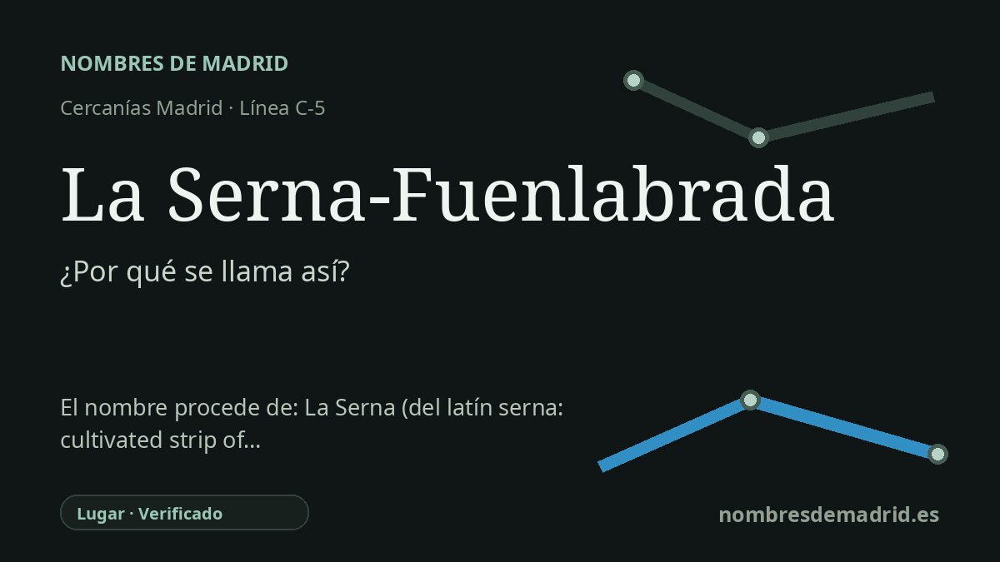

Publicado el · Investigación de Nombres de Madrid · Cómo verificamos cada origen · 7 fuentes consultadas
Respuesta rápida
La Serna-Fuenlabrada toma su nombre del barrio de La Serna, al norte de Fuenlabrada. El topónimo La Serna procede de la antigua voz agraria serna, una porción de tierra de sembradura o labrada aparte.
La historia del nombre
La Serna-Fuenlabrada toma su nombre del lugar al que sirve: La Serna, un barrio de la zona norte de Fuenlabrada, cerca del límite con Leganés. Las fuentes oficiales de transporte confirman las dos partes del nombre: el CRTM recoge la parada como La Serna en la línea C-5, mientras que la ficha de Renfe registra el nombre completo LA SERNA-FUENLABRADA, dentro del municipio de Fuenlabrada.
El nombre antiguo que está detrás de la estación es la voz agraria serna. En el español actual ya no es una palabra de uso común, pero la RAE la define como una porción de tierra de sembradura. El Toponomasticon Hispaniae explica que la palabra pervive abundantemente en topónimos de áreas castellanas y gallego-portuguesas, con formas como La Serna, Las Sernas, Serna o compuestos con un segundo elemento para distinguir unos lugares de otros.
La etimología profunda es sugerente, aunque no del todo sencilla. La RAE deriva serna del celta *senara, un campo labrado aparte, a partir de elementos con los sentidos de aparte y arar. El Toponomasticon Hispaniae es más prudente: clasifica *SĔNĂRA como prerromano, indica que se ha propuesto un origen céltico y advierte que el sentido original exacto es difícil de precisar, porque la explicación puede depender en parte de definiciones posteriores de la propia palabra.
En cuanto a la estación, el nombre pertenece a la expansión de Cercanías en el sur metropolitano de Madrid. Una noticia contemporánea de El País del 27 de abril de 1983 indica que el ministro de Transportes había inaugurado el apeadero de La Serna-Fuenlabrada, situado en el kilómetro 17,200 de la línea Madrid-Cáceres, y que el Ayuntamiento de Fuenlabrada financió la mitad de su coste, 58 millones de pesetas. Un diagnóstico municipal de movilidad describe después La Serna como un apeadero localizado en el barrio del mismo nombre, al norte del municipio.
La explicación pública más segura es, por tanto, local y estratificada: la parada se llama así por el barrio de La Serna, y ese barrio conserva una antigua palabra rural para una tierra de siembra o labrada aparte. La redacción de partida es sustancialmente correcta, pero debería evitar presentar una fase de latín vulgar como segura y conviene tratar la reconstrucción céltica como una propuesta, no como un hecho incontestable. Un supuesto nombre anterior, Fuenlabrada Apeadero, aparece en material secundario, pero la prensa de 1983 ya usa La Serna-Fuenlabrada, de modo que ese dato queda sin verificar.